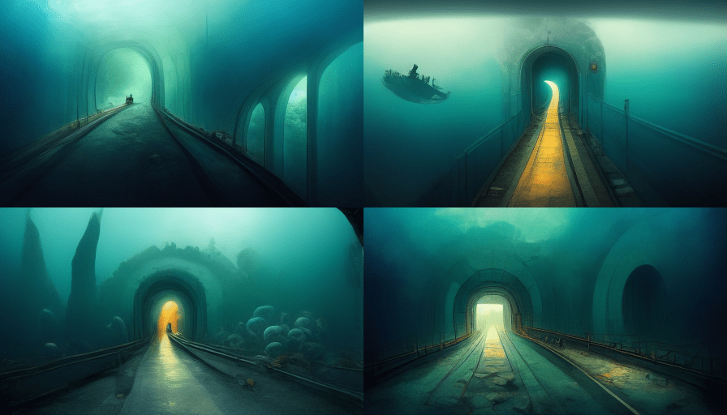

Project Themes - A Brave New World#
There are people who have no emotions in a really beautiful and futuristic world. They don’t know what love is, they don’t get angry or sad. They don’t experience any of the full range of human emotions. It’s a bit like living in a fairy tale, but everything is controlled by the government.

1. Undersea Tunnel#
Entering an undersea tunnel as if exploring a mysterious sea world.


2. Amazon#
In the vast jungle of the Amazon rainforest, it shows the life of a girl in a tribe through the four seasons.

3. Serengeti#
It shows more than 30 species of herbivores and more than 500 species of birds living together in harmony.

4. Mariana Trench#
It depicts an unknown world encountering mysterious aquatic creatures.


5. Hallasan Mountain#
An extinct volcano shows a mysterious forest.


6. Venice#
In the heart of the old city, surrounded by colonial buildings and traditions, there is a place where you can enjoy a gondola ride, a place where you can make your fantasy come true.
7. Antarctica#
In this brave new world, it snows all year round in the vast landscape. In the center of the country lies the village with a dark secret.


8. Reykjavik#
It shows the aurora, stars, and night sky.

9. Sun#
It is made up of hydrogen and helium atoms that are fused together to create energy. The atmosphere is the layer of gases that surrounds the core.

10. Silicon Valley#
Creating a virtual future city using artificial intelligence, AI, big data, 3D printing, and NFT

11. Mars#
The future city in Mars will be a huge city with high-rise buildings and a lot of people. The city will be very clean and there will be no pollution. The streets will be made of glass and there will be no traffic. The city will be lit by artificial suns and the buildings will be made of Martian rock. There will be gardens and parks everywhere. The city will be very safe and there will be no crime.


12. Undersea Tunnel#
It ends with exiting the undersea tunnel after exploring the mysterious sea world.
